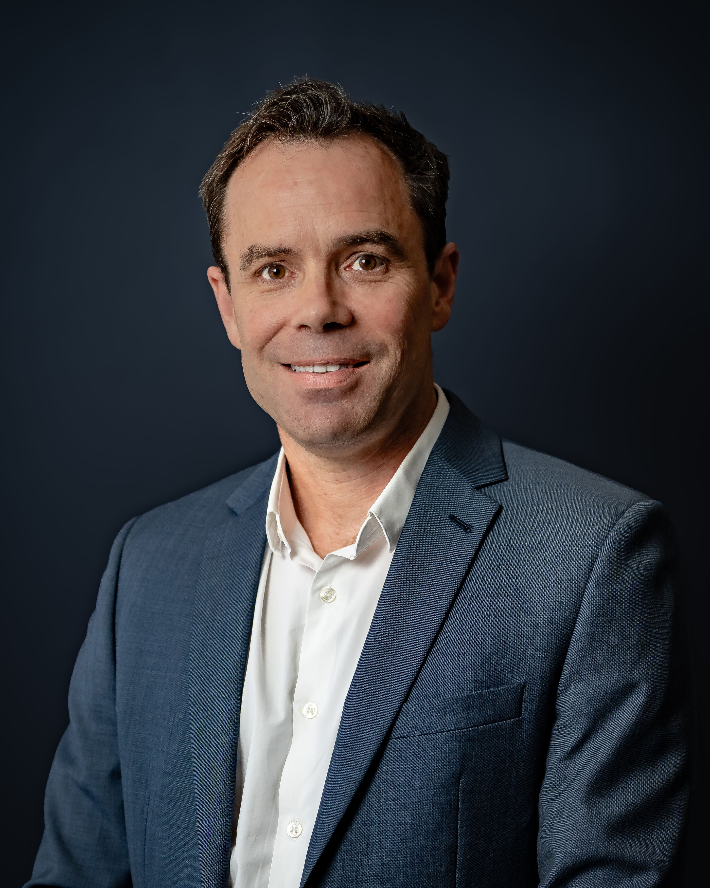

Physical assets, technical workflows, and environmental strategies deliver the greatest value when they are designed around human requirements and operational efficiency. Systemic friction—whether thermal issues in a building facade, siloed datasets, or misaligned project teams—introduces unnecessary risk, regulatory delays, and delivery friction.
This advisory bridges the gap between specialised engineering execution and executive-level planning. By treating technical models, environmental policy, and custom automation not as isolated exercises but as pragmatic tools, I help organisations secure clear commercial approvals, foster constructive team collaboration, and protect long-term asset performance.
This multidisciplinary consulting offering is structured into five distinct, commercially viable operational fields. This prevents organisational fragmentation, establishes a coherent strategy for technical asset protection, and ensures complex concepts are translated into clear human solutions.
Diagnosing and solving complex physical, thermodynamic, and airflow challenges in the built environment. Rather than utilising software simulations as a theoretical exercise, I leverage advanced computational tools to solve real-world problems relating to occupant comfort, safety, solar load, and natural ventilation.
Translating high-performance design goals into municipal approvals, commercial compliance schemes, and regulatory clearances. This involves close liaison with planning authorities and developers to navigate complex planning controls and environmental frameworks.
Building bespoke software tools and data pipelines to eliminate administrative friction and save valuable team effort. I specialise in turning unstructured, messy real-world datasets into clear, structured, and audit-ready reporting formats that human decision-makers can trust.
Managing computational infrastructure and development environments to support heavy processing workloads. The emphasis is on stability, robust security, developer automation, and rapid recovery to ensure continuous business operations.
Translating hyper-technical data, thermodynamic simulations, and environmental regulatory parameters into clear, jargon-free strategic briefings for diverse professional audiences, corporate boards, municipal planners, and community representatives.
A summary of roles and technical engagements, focused on direct systems development, team coordination, and practical delivery.
Leading a specialist built environment consultancy. Directed corporate operations, commercial proposals, and business development. Architected internal digital infrastructure and custom software, building automated Python report-builders and database systems to streamline environmental compliance. Led collaborative team workshops and executed a thorough strategic review of client workflows to improve delivery times and overall client satisfaction.
Operating concurrently as Principal & Sole Trader // Visergy
Conducted building simulations, carbon analyses, and compliance planning submissions. Engineered regional emissions datasets utilising visual dashboard tools. Programmed utility calculations and designed a mobile data-capture system for plumbing contractors to deploy Victoria's public housing hot water system upgrade programme.
Conducted in-depth qualitative interviews with public housing tenants in metropolitan Melbourne high-rise and low-rise developments, capturing real human stories, energy bill challenges, and thermal comfort pressures. Synthesised these findings into an actionable programmatic roadmap for the Victorian Department of Health and Human Services (DHHS) to drive subsequent large-scale thermal retrofits.
Managed multi-disciplinary building envelope, mechanical, and CFD simulation studies. Mentored young engineers and coordinated technical parameters across diverse disciplines (HVAC services, facade design, acoustics, fire safety, and structural teams) to resolve complex architectural bottlenecks.
Prepared air quality reports for a new laboratory building at La Trobe University, working with the university, the design team, and EPA Victoria to align on local environmental criteria. Delivered several years of guest lectures at Deakin University translating complex human thermal comfort thermodynamics into engaging, practical concepts for design students.
Conducted advanced airflow, daylighting, and thermal comfort analyses for public master plans, data centres, and commercial projects. At BMT Fluid Mechanics, set up, instrumented, and executed physical scale-model tests of city buildings in wind tunnels to evaluate cladding loads and pedestrian comfort. Designed environmental overlays for a 17-hectare mixed-use urban master plan in London (White City) to optimise the microclimate for public comfort, wind protection, and daylight availability.
Conducted computational and fluid analysis to resolve critical safety and structural parameters. Evaluated aerodynamic weapon trajectory paths for F-111 aircraft, analysed cavitation effects around conning towers for Collins-Class submarines, and developed dynamic simulation twin models to diagnose mechanical degradation and identify component faults in F404 jet engines.
My professional methodology is rooted in structural diagnostics, urban policy, and environmental system design. Combining a Bachelor of Engineering in Aerospace Engineering with a Master of Urban Planning and Environment, I provide a balanced advisory perspective that places human outcomes and environmental responsibility at the centre of technical solutions.
Whether coordinating interdisciplinary design teams, conducting field research with social housing tenants, negotiating with state environmental protection regulators, or scripting custom code to automate carbon calculations, all consulting outputs are delivered to resolve immediate operational pain points and support strategic executive decisions.
